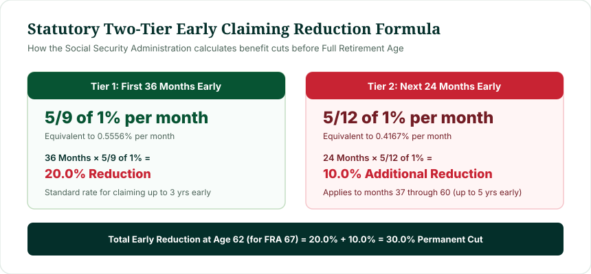

If you claim Social Security before your Full Retirement Age (FRA), three statutory consequences take effect immediately:
- Permanent Reduction: Your monthly benefit is permanently cut by 5/9 of 1% per month for the first 36 months early (up to 20%), plus 5/12 of 1% per month for each additional month up to 24 months early (up to 10%). For an FRA of 67, claiming at 62 equals a permanent 30.0% lifetime reduction.
- The Cut Never Resets: Reaching your Full Retirement Age does not restore your check to 100%. The reduction stays locked for the remainder of your life.
- Retirement Earnings Test: If you continue working, wages above the annual limit ($23,400 in 2025) trigger mandatory benefit withholding ($1 withheld for every $2 excess).
Crucially, retiring from work and claiming Social Security are two completely independent decisions. You can stop working at 60 or 62 and delay activating your Social Security benefits until age 67 to receive 100% of your Primary Insurance Amount.
What Does Early Retirement Mean for Social Security?
In colloquial language, "retiring early" means stepping away from a career before traditional retirement age. In statutory federal law, however, the Social Security Administration defines early retirement strictly by calendar age:
"Early retirement is electing to receive retirement insurance benefits in any month prior to the month you attain Full Retirement Age under Section 216(l) of the Social Security Act."
Because the federal government anticipates paying you monthly checks across a greater number of years, the monthly payout is reduced actuarially to ensure lifetime neutral cost to the Social Security Trust Funds.
Figure 1: The strategic divergence between stopping work and activating Social Security benefits.
Can You Get Social Security Before Full Retirement Age?
Yes. Fully insured workers with at least 40 Social Security credits (equivalent to 10 years of covered employment) can begin claiming retirement benefits as early as age 62. Under federal law, benefits cannot begin at 60 or 61 unless you qualify for Social Security Disability Insurance (SSDI) or survivor benefits as a widow or widower.
However, claiming at any age between 62 and your statutory FRA triggers the early reduction rules outlined below.
What Happens If You Claim Social Security at 62?
When you submit an early claim at age 62, the SSA assesses the exact number of months between your claiming date and your Full Retirement Age:
- Maximum Reduction Window: For workers born in 1960 or later, there are exactly 60 months between age 62 and FRA 67. This maximizes the statutory reduction to exactly 30.0%.
- Smaller COLA Multiplier: Future Cost-of-Living Adjustments are calculated as percentages of your current monthly check. A 3% COLA on a $1,400 check adds $42/mo, whereas a 3% COLA on a $2,000 FRA check adds $60/mo. Over a 25-year retirement, this compounding gap widens significantly.
- Surviving Spouse Impact: If you pass away first, your surviving spouse's survivor benefit is anchored to your actual payout. Claiming early permanently diminishes the maximum survivor safety net for your family.
For more details on earliest eligibility mechanics, see Can You Get Social Security at 62?.
How Full Retirement Age Affects Early Social Security
The size of your early claiming cut depends directly on your birth year, which dictates your statutory Full Retirement Age under 42 U.S. Code § 416(l):
| Birth Cohort | Full Retirement Age | Months Early at 62 | Benefit at Age 62 (% PIA) | Permanent Reduction |
|---|---|---|---|---|
| 1943–1954 | 66 Years Flat | 48 Months | 75.00% | -25.00% |
| 1955 | 66 Years + 2 Mos | 50 Months | 74.17% | -25.83% |
| 1956 | 66 Years + 4 Mos | 52 Months | 73.33% | -26.67% |
| 1957 | 66 Years + 6 Mos | 54 Months | 72.50% | -27.50% |
| 1958 | 66 Years + 8 Mos | 56 Months | 71.67% | -28.33% |
| 1959 | 66 Years + 10 Mos | 58 Months | 70.83% | -29.17% |
| 1960 or Later | 67 Years Flat | 60 Months | 70.00% | -30.00% |
Notice how younger cohorts face progressively steeper penalties: a retiree born in 1954 lost 25% of their benefit at 62, while a retiree born in 1960 loses a full 30%.
Early Retirement vs Early Social Security: What's the Difference?
Retiring from your employer and claiming Social Security are two entirely distinct decisions that can be unbundled:
You can retire from work on your 62nd birthday without filing for Social Security. Many retirees successfully bridge the gap between age 62 and age 67 using personal savings, 401(k) rollovers, traditional IRAs, or part-time consulting. By allowing your Social Security entitlement to mature untouched, your eventual benefit will be 43% higher each month for the rest of your life.
The 62-to-FRA Bridge Plan: How Waiting Pays Off
Consider a worker whose Primary Insurance Amount is $2,200 at an FRA of 67. If they leave the workforce at 62, they face two distinct financial pathways:
- Immediate Claim Path: They file for Social Security at 62, receiving $1,540 per month. Over the next 5 years (60 months), they collect $92,400 in cumulative benefits. However, their monthly check is capped at $1,540 (plus COLA) permanently.
- Bridge Savings Path: They spend down $92,400 from their tax-deferred IRA or 401(k) between ages 62 and 67, delaying their Social Security application until age 67. At 67, their monthly check starts at $2,200—an extra $660 each month for life. By age 78.5, the higher monthly checks completely recover the $92,400 bridge capital, producing substantial net gains for every year they live thereafter.
Can You Work and Receive Social Security Before FRA?
Many early retirees transition into part-time work, freelance consulting, or seasonal employment. If you claim Social Security early while earning wages, you must navigate the Retirement Earnings Test (42 U.S. Code § 403):
Retirement Earnings Test Rules (Under FRA)
Only earned wages, bonuses, and net self-employment income count toward this limit. Pension payouts, 401(k) withdrawals, IRA distributions, capital gains, and dividend income are 100% exempt and do not trigger benefit withholding.
Importantly, benefits withheld due to earnings are not lost forever. When you reach Full Retirement Age, the SSA automatically recalculates your benefit upward to credit back the months where benefits were withheld.

Figure 2: The statutory two-tier early claiming reduction schedule established under 42 U.S. Code § 402(q).
The Statutory Two-Tier Reduction Formula Explained
The Social Security early claiming reduction is calculated using a two-tier mathematical formula codified in federal law:
- Tier 1 (Months 1 through 36 Early): Benefits are reduced by 5/9 of 1% (approximately 0.5556%) per month for each of the first 36 months claimed prior to FRA. Claiming 36 months early (e.g. age 64 for an FRA of 67) results in:
36 × (5/9 of 1%) = 20.0% Reduction - Tier 2 (Months 37 through 60 Early): For any additional months beyond 36, benefits are reduced by 5/12 of 1% (approximately 0.4167%) per month up to an additional 24 months. Claiming 60 months early (age 62 for an FRA of 67) adds:
24 × (5/12 of 1%) = 10.0% Additional Reduction
Total Reduction = 20.0% + 10.0% = 30.0% Permanent Cut
Social Security at 62 vs Full Retirement Age: Side-by-Side
| Factor | Claiming at Age 62 | Claiming at FRA (67) |
|---|---|---|
| Monthly Benefit Multiplier | 70.0% of PIA | 100.0% of PIA |
| Example Monthly Check ($2,000 PIA) | $1,400 / month | $2,000 / month |
| Earliest Cash Collection | Immediate (up to 5 years earlier) | Delayed by 60 months |
| Retirement Earnings Test | Applies ($23,400 cap in 2025) | Zero wage cap (Unlimited earnings) |
| Spousal Survivor Baseline | Reduces survivor protection | Preserves 100% survivor baseline |
| Permanence of Rate | Permanent for life | Permanent baseline (can grow to 124% at 70) |
Worked Scenario: A Retiree Born in 1960
Consider an actual planning case for a worker born in 1960 with a Full Retirement Age of 67 and an estimated PIA of $2,400:
Worked Scenario: Born July 10, 1960 (PIA = $2,400)
Choice 1 (Claim at Age 62 in July 2022): The worker receives $2,400 × 70% = $1,680 per month. Over the 5 years leading to age 67, they receive $100,800 in total payments.
Choice 2 (Delay to FRA 67 in July 2027): The worker receives 100% of their benefit: $2,400 per month ($720 more each month).
The Break-Even Intersection: Dividing the $100,800 received early by the $720 monthly premium reveals a break-even duration of 140 months (11 years and 8 months). At age 78 years and 8 months, the delayed strategy surpasses the early strategy in cumulative lifetime dollars.
Seven Critical Factors Before Deciding to Claim Early
Before submitting an early retirement claim with the SSA, review these seven core criteria:
- Immediate Cash Flow Need: If you face unemployment, disability, or lack liquid emergency savings, claiming at 62 provides essential liquidity.
- Alternative Bridge Capital: Do you have 401(k), IRA, or brokerage assets that can fund living expenses between 62 and 67?
- Personal & Family Longevity: If you have serious health complications or a family history of shorter lifespans, claiming early often captures more lifetime benefits.
- Active Employment Plans: If you plan to continue working and earning over $23,400, the earnings test will withhold substantial benefits, making early claiming counterproductive.
- Spousal Benefit Coordination: If you are the higher-earning spouse, delaying until FRA or 70 provides your surviving spouse with the largest possible lifetime check.
- Taxation of Benefits: Receiving Social Security while withdrawing large sums from traditional retirement accounts can push up to 85% of your benefits into taxable brackets.
- Medicare Timing: Claiming at 62 does not provide health insurance. You must bridge medical coverage until Medicare begins at age 65.
Social Security, Medicare and Age 65: Don't Confuse Them
A frequent error among early retirees is assuming that claiming Social Security at 62 unlocks Medicare. Medicare eligibility strictly begins at age 65, regardless of whether you claim Social Security at 62, 67, or 70:
- Healthcare Bridge (Ages 62 to 65): You must maintain health coverage through COBRA, an ACA healthcare exchange, or a spouse's group health plan.
- Initial Enrollment Period: When you turn 65, you must enroll in Medicare Part A and Part B during your 7-month window to avoid permanent lifetime penalties.
Common Mistakes When Planning Early Retirement
- Believing Benefits Reset at FRA: Many people mistakenly believe the 30% cut is temporary and disappears at age 67. The reduction is permanent for life.
- Ignoring the 35-Year Wage Average: If you retire at 60 with only 30 years of earnings, the SSA calculates your benefit with 5 zero-earning years, lowering your baseline PIA.
- Overlooking the Earnings Test: Continuing to earn high wages after claiming at 62 results in benefit withholding and unnecessary administrative complexity.
- Not Using an Age Calculator: Guessing your Full Retirement Age or milestone dates leads to miscalculated claiming filings.
Frequently Asked Questions
What is considered early retirement for Social Security?
Early retirement is claiming retirement benefits at any point before you reach your statutory Full Retirement Age. The earliest allowable age is 62.
Does retiring early automatically reduce my Social Security?
Stopping work early does not reduce your benefit percentage unless you also claim benefits early. However, having fewer than 35 career work years can lower your baseline Primary Insurance Amount.
Can I retire from my job at 62 but wait to claim Social Security?
Yes. This is called a bridge retirement strategy. You live on personal savings or retirement accounts while allowing your Social Security benefit to mature unreduced until Full Retirement Age.
How much do I lose by taking Social Security at 62?
If your Full Retirement Age is 67, taking Social Security at 62 permanently reduces your monthly check by 30.0% (receiving 70.0% of your full benefit).
Does the reduction go away when I turn 67?
No. The early reduction is permanent for life. Your benefit does not jump to 100% when you reach Full Retirement Age.
Can I work part-time if I claim Social Security early?
Yes, but wages above the annual limit ($23,400 in 2025) will trigger benefit withholding ($1 withheld for every $2 excess) until you reach Full Retirement Age.
Methodology & Verification Standards
This guide was developed by Navjeet Kamboj using statutory formulas codified in Title II of the United States Social Security Act and verified through official SSA regulations:
- Early Claiming Statutory Reductions: 42 U.S. Code § 402(q) (Five-ninths and five-twelfths of 1% monthly formula).
- Retirement Earnings Test Provisions: 42 U.S. Code § 403(f) (Statutory thresholds and withholding percentages).
- Statutory FRA Schedule: 42 U.S. Code § 416(l) (Phase-in schedules from 1983 Amendments).
- Attainment of Age Precedents: SSA POMS GN 00302.010 (Birthday milestone legal standards).